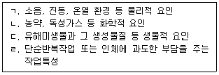
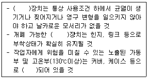
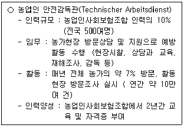
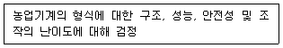
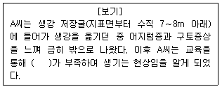
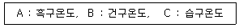
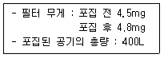
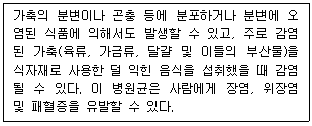

농작업안전보건기사 (2018-12-22 기출문제)
1과목: 농작업과 안전보건교육
1. 다음 중 OJT(On the Job Training)에 관한 설명으로 가장 거리가 먼 것은?
- 개개인에게 적절한 지도훈련이 가능하다.
- 훈련에 필요한 업무의 계속성이 끊어지지 않는다.
- 현장작업과 관계없이 계획적으로 훈련할 수 있다는 장점을 가지고 있다.
- 작업장 설정에 맞는 실제적 훈련이 가능하다.
(정답률: 86%)

2. 농작업 안전보건 교육을 계획할 때 우선순위를 결정하는 기준으로 가장 거리가 먼 것은?
- 많은 사람에게 영향을 미치는 문제를 선정한다.
- 여러 번 반복하여야 할 내용을 선정한다.
- 심각한 영향을 미치는 문제를 선정한다.
- 교육내용에 대한 교육대상자의 관심이 높은 것을 선정한다.
(정답률: 71%)
3. 농약관리법상의 “농약”으로 분류되지 않는 것은?
- 전착제
- 살충제
- 제초제
- 도포제
(정답률: 76%)
4. 다음 중 농작업 안전보건 교육프로그램을 효과적으로 개발하기 위한 접근 방법인 교수체제개발(ISD, instructional systems development)의 특징으로 잘못된 것은?
- 논리적 순서를 갖는 체계성을 띤다.
- 교수체제개발의 각 단계들은 신뢰할 만하다.
- 분석, 설계, 개발, 실행, 평가의 과정이 선형적이다.
- 체계적(systemic) 과정으로 학습에 영향을 미칠 수 있는 모든 상황적·맥락적 변인을 고려한다.
(정답률: 45%)
5. 「농업기계화 촉진법」에 따른 농기계 안전 관리 및 안전교육에 관한 설명이 틀린 것은?
- 농기계 안전교육 대상자 범위, 교육기간 및 교육과정 등은 농림축산식품부령으로 정한다.
- 관계 행정기관의 장은 농업기계의 안전사고 예방을 위하여 안전교육계획을 매년 수립하고 시행하여여 한다.
- 농림축산식품부장관은 안전관리대상 농업기계의 소유자나 사용자에 대하여 안전장치 부착 여부와 안전장치 구조의 임의 개조 여부를 조사할 수 있다.
- 콤바인 등 농업기계의 사용자는 생산성 및 편의를 위해 농업기계의 안전장치 구조 일부를 개조하거나 변경할 수 있다.
(정답률: 86%)
6. 「농어업인의 안전보험 및 안전재해예방에 관한 법률」에서 규정한 농어업작업안전재해 예방기본계획에 포함되지 않는 것은?
- 농어업작업안전재해 보상에 관한 사항
- 농어업작업안전재해 예방 정책의 기본방향
- 농어업작업안전재해 예방을 위한 교육·홍보에 관한 사항
- 농어업작업안전재해 예방 정책에 필요한 연구·조사에 관한 사항
(정답률: 85%)
7. 농작업 안전보건 교육프로그램 개발을 위한 ADDIE 모형은 5가지 절차로 구성되어 있다. ( )안에 알맞은 용어는?
- 관찰
- 연구
- 실기
- 실행
(정답률: 96%)
8. 「농어업인 삶의 질 향상 및 농어촌지역 개발 촉진에 관한 특별법」상 농작업자 건강위해 요소의 측정 대상을 모두 나열한 것은?

- ㄱ
- ㄷ, ㄹ
- ㄱ, ㄴ, ㄹ
- ㄱ, ㄴ, ㄷ, ㄹ
(정답률: 76%)
9. 다음 중 농작업 안전보건 교육프로그램을 개선하기 위해 실시되는 평가로 프로그램을 어떻게 더 잘 만들지에 대한 정보를 제공하는 것은?
- 규준평가
- 총괄평가
- 진단평가
- 형성평가
(정답률: 44%)
10. 농작업 환경과 연계된 건강 유해요인으로서 가장 거리가 먼 것은?
- 시설하우스 작업 - 더위
- 콤바인 벼 수확작업 - 곡물분진
- 노지고추 방제작업 - 농약
- 양계작업 - 이산화탄소
(정답률: 86%)
11. 다음 중 인간행동의 변화에 시간이 많이 소요되고 가장 어려운 변화는?
- 개인행동의 변화
- 태도의 변화
- 지식의 변화
- 조직문화의 변화
(정답률: 73%)
12. 농작업 사고·질환 발생 시 비가역적인 인적, 물적 손실이 일어나는 특성을 고려해 볼 때 다음 중 가장 선행되어야 할 것은?
- 현장조사(감시)
- 재해예방
- 산재보장(보상)
- 건강관리
(정답률: 77%)
13. 「농어업인 삶의 질 향상 및 농어촌지역 개발 촉진에 관한 특별법」에서 ‘농어업인 삶의 질 향상 및 농어촌 지역개발위원회’를 어느 소속으로 두도록 되어 있는가?
- 국무총리
- 해양수산부
- 농림축산식품부
- 지방자치단체
(정답률: 50%)
14. 다음 중 농작업 안전보건 교육프로그램 교재를 개발할 때 고려되어야 할 사항으로 가장 거리가 먼 것은?
- 학습자의 태도
- 시간 활용 가능성
- 필요한 자원의 확보
- 전문가 활용 가능성
(정답률: 77%)
15. 「농업기계화 촉진법」에 따라 안전관리대상 농업기계의 주요 안전장치로 분류되지 않는 것은?
- 제동장치
- 동화장치
- 가동부의 방호
- 저온부의 방호
(정답률: 80%)
16. “농업기계의 안전장치 구조 및 성능기준“의 설명 중 ( )안에 공통으로 들어갈 용어는?

- 방호
- 시동
- 취출
- 제동
(정답률: 80%)
17. 「농어업인의 안전보험 및 안전재해예방에 관한 법률」상 “농어업인의 안전보험”과 관련한 내용이 틀린 것은?
- “장해”란 부상 또는 질병이 치유되었으나 육체적 또는 정신적 훼손으로 인하여 노동능력이 상실되거나 감소된 상태를 말한다.
- “휴업급여금”은 농어업작업으로 인하여 부상을 당하거나 질병에 걸려 농어업작업에 종사하지 못하는 경우에 그 휴업기간에 따라 산출한 금액을 피보험자에게 일시금으로 지급한다.
- 「산업재해보상보험법」에 따라 산업재해보상보험의 적용을 받는 농어업인 또는 농어업근로자도 피보험자가 될 수 있다.
- 보험금을 지급 받을 수 있는 권리는 양도하거나 담보로 제공할 수 없으며, 압류대상으로 할 수 없다.
(정답률: 61%)
18. 농작업 안전보건 관리를 위하여 다음의 농업인 안전감독관(TAD)제도를 운영하는 국가는?

- 영국
- 독일
- 미국
- 핀란드
(정답률: 62%)
19. 다음 중 농작업 안전보건 교육계획서에 포함되어야 할 사항으로 가장 거리가 먼 것은?
- 교육방법
- 교육프로그램 목적
- 비용-효과 분석방법
- 교육프로그램 장소
(정답률: 81%)
20. 농업인의 건강관리 대책 수립시 고려할 것으로 가장 거리가 먼 것은?
- 고령 연령
- 가족 경영형태
- 농업인들의 작업특성 이해
- 작업 관련성 질환에 대한 진단
(정답률: 80%)
2과목: 농작업 안전관리
21. 이동식 사다리의 안전기준으로 틀린 것은?
- 사다리의 폭은 30cm 이상인 것으로 사용한다.
- 사다리의 길이는 안정성이 확보되면 제한이 없다.
- 사다리의 발판에는 물결모양 등 미끄럼방지 처리가 된 것을 사용한다.
- 사다리의 상부 3개 발판 미만에서만 작업하며, 최상부 발판에서는 작업하지 않는다.
(정답률: 96%)
22. 중량물 인력운반 작업의 안전지침으로 옳은 것은?
- 액체와 같이 유동적인 내용물의 중량물을 들 때는 내용물이 신체에 튀지 않도록 되도록 몸으로부터 멀리 유지한 채 작업하는 것이 좋다.
- 중량물을 여러 번 들어 나르는 것보다는 여러 개를 한 번에 운반하여 작업빈도를 줄이는 것이 좋다.
- 수레를 이용하여 중량물을 운반 시 수레를 잡아당기는 것보다는 밀어서 운반하는 것이 좋다.
- 바닥에 있는 중량물을 들 때 되도록 무릎을 편채 드는 것이 좋다.
(정답률: 80%)
23. 인간의 안전심리 5요소에 해당하지 않는 것은?
- 지능(Intelligence)
- 감정(Emotion)
- 습관(Custom)
- 동기(Motive)
(정답률: 58%)
24. 넘어짐 사고와 떨어짐 사고의 예방방안으로 틀린 것은?
- 마찰력이 낮은 작업화를 착용한다.
- 어두운 공간에는 충분한 조명을 설치한다.
- 사다리 작업 안전지침 및 기준을 준수한다.
- 작업화 바닥, 사다리 발판의 흙을 털어 미끄러움을 예방한다.
(정답률: 92%)
25. 경운기를 운전할 때 조향 클러치를 이용해도 안전한 작업이 가능한 경우는?
- 밭에서 로터리로 작업할 때
- 급경사의 내리막 농로를 주행할 때
- 급경사의 오르막 농로를 주행할 때
- 빠른 속도로 주행하고 있을 때
(정답률: 84%)
26. 하인리히(H. W. Heinrich)의 재해발생비율 이론에 따르면 중상재해가 3건이 발생하였다면 “경상재해”의 발생 건수는?
- 18건
- 30건
- 87건
- 900건
(정답률: 67%)
27. 농업인의 업무상 재해율에 해당되지 않는 것은?
- 산업재해보상보험 기반 재해율
- 농업인 안전보험 기반 재해율
- 농업인 업무상재해 국가통계 기반 재해율
- 국민건강의료보험 기반 재해율
(정답률: 88%)
28. 농업기계 중 방제복, 방제마스크, 고무장갑 등의 보호장구를 착용하고 반드시 바람을 등지고 작업해야 하는 것은?
- 연무기
- 난방기
- 비닐 피복기
- 사료작물 수확기
(정답률: 85%)
29. 농작업 중 다른 작업자가 감전되었을 경우 가장 먼저 조치해야 할 사항은?
- 물을 붓는다.
- 전원을 차단한다.
- 소화기를 살포한다.
- 신속히 사고자를 잡아당긴다.
(정답률: 92%)
30. 질식사고 가능성이 있는 밀폐된 작업공간에서 작업할 때 작업자가 착용해야 할 적합한 보호구는?
- 방독 마스크
- 보안면
- 송기 마스크
- 방진 마스크
(정답률: 75%)
31. 재해예방의 4원칙에 해당되지 않는 것은?
- 손실필연의 법칙
- 원인계기의 법칙
- 예방가능의 법칙
- 대책선정의 법칙
(정답률: 68%)
32. 일반적인 동력예취기 사용에 관한 안전지침으로 틀린 것은?
- 작업 중에는 작업작 간에 5m 거리를 유지한다.
- 예취기 주유 시에는 엔진 시동을 정지 후 급유한다.
- 엔진 시동은 지면에서 에취기 날을 띄운 상태로 시동한다.
- 온도가 낮은 아침의 경우 손을 충분히 따뜻하게 한 후 작업한다.
(정답률: 66%)
33. 콤바인 정치 탈곡 시 주의사항으로 틀린 것은?
- 탈곡부에 손을 넣지 않는다.
- 탈곡과 관계없는 부분(예취부 등)을 정히한 후 탈곡한다.
- 정치탈곡 할 때는 작물을 무리하게 투입하지 않는다.
- 탈곡 시 분진 노출을 줄이기 위해 수건을 목이나 허리에 두르고 작업한다.
(정답률: 86%)
34. 다음 설명은 필수적 검정대상 농업기계에 대한 어떤 종류의 검정인가? (단, 농업기계화 촉진법에 근거 한다.)

- 안전검정
- 종합검정
- 기계검정
- 변경검정
(정답률: 80%)
35. 다음 중 하비의 안전대책 중 3E에 속하지 않는 것은?
- Enforcement
- Engineering
- Education
- Environment
(정답률: 53%)
36. 농업기계 교통사고 예방을 위해 “저속차량표시등”이 반드시 고정 부착되어야 하는 기종이 아닌 것은? (단, 농업기계화 촉진법령상 기준을 적용한다.)
- 콤바인
- 농업용 트랙터
- 동력경운기용 트레일러
- 보행형 농업용 동력운반차
(정답률: 65%)
37. 스키드로더의 안전사용 방법으로 틀린 것은?
- 운전자는 작업자의 방해물을 확인 후 작업한다.
- 동절기 사용 시 페달 및 유압연결 장치 주변 등을 자주 청소한다.
- 운전자가 기계 밖으로 나와야 할 때는 로더의 버킷은 반드시 위쪽으로 올려두도록 한다.
- 엔진이 정지 했을 때 위로 올려져있는 버킷 아래로 걸어가거나, 그 아래에서 기계에 기대지 않는다.
(정답률: 91%)
38. 농약의 독성정도를 구분할 때 해당되지 않는 것은?
- 맹독성
- 고독성
- 급독성
- 저독성
(정답률: 69%)
39. 재해의 직접원인 둥 불안전 상태(물적 원인)에 해당되지 않는 것은?
- 위험한 장소에 접근
- 작업환경의 결함
- 불량한 복장·보호구
- 안전보호 장치의 결함
(정답률: 82%)
40. 지난 1년간 발생한 농작업 안전사고의 사고 유형별 빈도자료를 이용하여 주된 사고 유형을 선별하기 위한 방법으로 막대의 높이로 나타내는 것은?
- 관리도(control chart)
- 클로즈 (Close) 분석
- 파레토도(pareto diagram)
- 특성요인도(characteristics diagram)
(정답률: 72%)
3과목: 농작업 보건관리
41. 다음 중 농작업 과정에서 문제될 수 있는 직업성 요통의 위험 요인은?
- 국소진동
- 소음
- 전신진동
- 기압
(정답률: 66%)
42. 다음 진동노출 평가기준 및 방법에 대한 설명으로 틀린 것은?
- 인체 진동 노출을 평가하기 위해서는 3방향(X, Y, Z)을 측정한다
- 손에 전달되는 진동을 측정하는 경우는 진동이 손으로 전달되는 위치로부터 가까운 곳에서 측정한다.
- 농작업에서 발생 가능한 요통과 관련되는 것은 국소진동이다.
- 진동 발생 수준은 작업 대상의 노면상태, 작업 내용에 따라 다르다.
(정답률: 67%)
43. 미국 산업위생전문가협의회(ACGIH)의 작업장 노출 기준(Threshold Limit Value, TLV) 중 일하는 시간 동안 어느 순간에도 초과해서는 아니 되는 것은?
- 천정값 (Ceiling) 노출기준
- 시간가중평균 (TWA) 노출기준
- 단시간 (STEL) 노출기준
- 상한치(excursion limits)
(정답률: 45%)
44. 농약의 피부노출 정도를 평가하는 방법 중 비용이 저렴하고 작업자의 업무가 방해되지 않는다는 장점으로 많이 사용되는 것은?
- 패치법
- 형광물질조사법
- 전신노출조사법
- 와쉬(Wash)법
(정답률: 81%)
45. [보기]의 농업인 재해사례 중 ( )안에 들어갈 알맞은 용어는?

- 이산화탄소
- 산소
- 암모니아
- 황화수소
(정답률: 87%)
46. 건초작업 과정에서 방선균 노출과 체내 면역계가 복합적으로 관련된 질환은?
- 천식
- 탄저변
- 브루셀라증
- 농부과민성폐렴
(정답률: 72%)
47. 유해요인의 위험도를 평가할 때 고려되어야 할 변수로 가장 거리가 먼 것은?
- 노출시간
- 유해성
- 노출농도
- 성별
(정답률: 88%)
48. 농작업 과정 중 발생할 수 있는 손/손목 부위의 위험요인으로 관련성이 높은 것은? (단, 미국 NIOSH의 근골격계질환과 물리적 위험 요인과의 관계를 근거로 한다.)
- 무리한 힘
- 반복적인 동작
- 부적절한 작업 자세
- 반복성, 힘, 작업자세의 복합작용
(정답률: 65%)
49. 농업인의 농약노출과 관리에 대한 설명으로 틀린 것은?
- 우리나라는 농업인 대상의 농약 노출기준이 없다.
- 농약을 살포할 때는 바람을 등지고 살포해야 한다.
- 사용하고 남은 농약은 깨끗하고 투명한 다른 병에 옮겨 담아 보관한다.
- 농약을 살포할 때에는 별도의 농약 작업용 호흡 보호구를 착용해야 한다.
(정답률: 84%)
50. 농촌지역의 슬레이트 지붕에 함유된 물질로 폐암이나 중피종의 발생 원인은?
- 이산화규소
- 석면
- 유리섬유
- 석회
(정답률: 92%)
51. 소음수준별 노출기준(1일노출시간)으로서 절대 초과해서는 안되는 소음 강도 기준은? (단, 고용노동부의 “화학물질 및 물리적인자의 노출기준”을 적용한다.)
- 90dB
- 100dB
- 1⑤dB
- 115dB
(정답률: 52%)
52. 농약 살포 시 작업자가 준수하여야 할 노출 관리방안으로 부적합한 것은?
- 농약을 살포할 때는 보안경을 착용하여 눈을 보호하여야 한다.
- 농약은 아침, 저녁과 같이 비교적 서늘한 시간에 살포하도록 한다.
- 농약 살포 시 땀을 닦는 수건은 별도의 비닐주머니에 보관하여 사용하도록 한다.
- 살포 농약이 호흡기를 통하여 가장 많이 체내로 흡수되기 때문에 호흡용 보호구 착용을 철저하게 한다.
(정답률: 64%)
53. 안전한 중량물 들어올리기 방법에 대한 설명으로 틀린 것은?
- 들어 올려야 할 중량물의 수직과 수평거리를 최소화해야 한다.
- 가능한 한 들어 올리는 속도를 느리게 해야 한다.
- 중량물을 들어 올릴 때 허리 비틀림에 유발되지 않도록 주의해야 한다.
- 다리에 의해 제공되는 지지면이 어깨 넓이 보다 좁은 상태에서 들어 올려야 한다.
(정답률: 87%)
54. 가축과의 접촉에 의해 생길수 있는 인수공통 감염병이 아닌 것은?
- 탄저병
- 조류독감
- 브루셀라증
- 쯔쯔가무시증
(정답률: 36%)
55. 여름철 노지 작업 시 온열스트레스(WBGT)를 평가하고자 할 때, 측정에 필요한 항목을 모두 나열한 것은?

- A, B
- A, C
- B, C
- A, B, C
(정답률: 76%)
56. 우리나라에서 흔한 작은소피참진드기를 통해 바이러스에 감염되어 발생되는 질환으로, 체액이나 혈액을 통해 사람과 사람 간에도 전파가능한 감염성 질환은?
- 쯔쯔가무시증
- 신증후군출혈열
- 렙토스피라증
- 중증열성혈소판감소증후군
(정답률: 60%)
57. 다음 중 농업인에게 문제가 될 수 있는 일반적인 스트레스의 요인으로 가장 거리가 먼 것은?
- 자연재해
- 농기계 소음
- 농기계에 의한 안전사고 위험
- 수작업의 기계화에 따른 작업시간 단축
(정답률: 96%)
58. 근골격계질환의 특징에 관한 설명으로 틀린 것은?
- 특정된 하나의 신체부위에 발생할 수 있고, 동시에 여러 부위에 발생할 수 있다.
- X-ray 등의 방사선학적 소견과 임상증상이 일치하지 않는 경우도 있다.
- 질환의 임상증상 및 검사소견은 사고성과 비사고성으로 명확하게 구분될 수 있다.
- 직업적인 원인 외에 개인요인 등의 비직업직인 원인에 의해서도 발생할 수 있다.
(정답률: 92%)
59. 중량물을 반복적으로 드는 직업의 요통 위험성을 평가하고자 한다. 다음 중 가장 적절한 평가 도구는?
- JSI(Job Strain Index)
- NLE(NIOSH Lifting Equation)
- REBA(Tapid Entire Body Assessment)
- OWAS(Ovako Working-posture Analysis System)
(정답률: 60%)
60. 농작업에서 문제되는 분진을 포집하여 측정한 결과값이 다음과 같을 때 분진농도는?

- 7.5mg/m3
- 17.5mg/m3
- 1.75mg/m3
- 0.75mg/m3
(정답률: 64%)
4과목: 농작업 안전생활
61. 농촌지역 교통안전을 위한 행동으로 올바르지 않은 것은?
- 야간 보행 시 안전반사 소재가 부착된 옷을 착용한다.
- 경운기 등의 농기계 운전 중에는 술을 마시지 않는다.
- 야간도로 주행 시 경운기 후미에는 야간 반사판이나 조명을 부착한다.
- 경운기 트레일러에 작업자가 반드시 탑승 후 앉음을 확인 후 이동한다.
(정답률: 83%)
62. 홍수발생 시 대처요령 중 침수되었던 집에 들어갈 경우 대처 요령이 옳지 않은 것은?
- 어두운 실내로 진입할 경우에는 촛불 등을 사용한다.
- 바로 들어가지 말고, 붕괴 가능성을 반드시 확인한다.
- 수독물이나 저장식수는 오염여부를 확인한 후 사용한다.
- 비y 젖었던 임식이나 재료는 먹거나 사용하지 않는다.
(정답률: 92%)
63. 농업기계용 유류창고에서 화재사고를 대비하기 위해 적합한 소화기를 비치하려고 할 경우 화재급수와 적응력이 있음을 표시하는 색은?
- A급 화재 - 백색
- B급 화재 - 황색
- C급 화재 - 청색
- B급 화재 - 무색
(정답률: 88%)
64. 자외선 중 일명 화학적인 자외선이라 불리며, 안전과 보건측면에 관심이 되는 자외선의 파장범위로 가장 적합한 것은?
- 100∼215mm
- 200∼315mm
- 300∼415mm
- 400∼515mm
(정답률: 62%)
65. 정전작업 시 유도 또는 오조작으로 인한 감전을 방지하기 위해 작업 장소 양단에 설치하는 안전장구는?
- 검전기
- 통전기
- 접지용구
- 활선접근 경보기
(정답률: 74%)
66. 농약을 마신 사람에게 실시해야 될 응급처치 방법으로 가장 부적합한 것은?
- 호흡이 멈췄을 때에는 인공호흡을 실시한다.
- 물이나 식염수를 2∼3잔 마시게 한 후 손가락을 넣어서 토하게 한다.
- 환자를 신선한 공기가 있는 곳으로 옮기고 옷을 풀어 놓은 다음 심호흡을 시킨다.
- 호흡이 약하고 침이 많이 고였을 때에는 환자를 반듯하게 눕힌 후 움직이지 못하도록 한다.
(정답률: 64%)
67. 국소진동에 노출되는 경우 손가락(수지)의 감각마비 증상이 나타나는 것은?
- 전신체온강하
- 참호족(참수족)
- 류마티스 관절염
- 레이노드(Raynaud)현상
(정답률: 85%)
68. 방독 마스크의 사용과 관리 방법으로 옳지 않은 것은?
- 대상 유해물질의 제독에 적합한 정화통을 구분하여 선택한다.
- 면체, 배기밸브 등의 사용과 관리방법은 방진 마스크와 동일하다.
- 유해가스 농도가 높은 장소에서 장시간 사용할 수 있다.
- 착용 시 공기가 새는 것이 느껴지지 않도록 밀착검사를 실시한다.
(정답률: 83%)
69. 농약의 혼합 시 착용하기에 가장 적합한 보호 장갑은?
- 알루미늄 장갑
- 합성폴리아미드 장갑
- 면 장갑
- 네오프렌 장갑
(정답률: 50%)
70. 가축 사육시 작업자 건강에 영향을 미칠 수 있는 주요 유해요인에 해당되지 않는 것은?
- 바이러스
- 유기먼지
- 중량물 작업
- 이산화탄소
(정답률: 50%)
71. 경련환자의 응급처치 방법으로 옳은 것은?
- 환자가 과도한 경련에 의해 저혈당이 우려되므로 먹을 거나 마실 것을 제공한다.
- 경련하는 동안 환자의 손상이 우려되므로 움직임을 줄일 수 있도록 힘주어 잡아준다.
- 경련에 의해 환자의 치아 손상이 우려되므로 입안에 천이나 부드러운 물건을 넣어준다.
- 주변의 물건을 치워 부딪힘에 의한 손상을 방지한다.
(정답률: 59%)
72. 다음의 설명에 해당하는 것은?

- 살모넬라
- 노로바이러스
- 장염비브리오
- 황색포도상구균
(정답률: 58%)
73. 농촌 소각장에서 폐비닐이나 전선, PVC를 태울 때 발생하는 물질로 인체에 독성이 강한 것은?
- 다이옥신
- 불산
- 에탄올
- 황산화물
(정답률: 91%)
74. 다음 중 자외선 과다노출에 의한 인체유해 영향과 가장 거리가 먼 것은?
- 구루병
- 백내장
- 익상편
- 피부 흑색종
(정답률: 85%)
75. 기상청에서 아침 최저기온이 2일 이상 일정온도 이하로 지속 될 것으로 예상될 때 한파주의보를 발효한다. 이 기준 온도는?
- -8℃
- -10℃
- -12℃
- -15℃
(정답률: 48%)
76. 안전모의 종류 구분 중 “떨어지거나 날아오는 물체에 맞을 위험을 방지 또는 경감하고, 머리 부위 감전 위험을 방지”하기 위한 목적에 가장 적합한 것은?
- A종
- AB종
- AE종
- ABE종
(정답률: 62%)
77. 축사에 화재가 발생한 경우 원인규명을 위해 조사해야 할 내용과 가장 거리가 먼 것은?
- 화재규모
- 발화원
- 발화형태
- 착화물
(정답률: 67%)
78. 다음 중 벌이나 뱀에 대한 상화별 안전조치 및 응급처치 요령으로 적합하지 않은 것은?
- 벌 : 향수나 화장품을 사용하거나, 화려한 복장을 착용하지 않는다.
- 벌 : 항히스타민제가 포함된 스테로이드 연고를 바르면 효과적이다.
- 뱀 : 물린 다리 부위의 상처 아래쪽을 단단히 묶어 고정해 준다.
- 뱀 : 최대한 빨리 병원으로 가서 종합 해독제 주사를 맞는다.
(정답률: 75%)
79. 무겁거나 날카로운 거친 자재를 다루는 작업을 하는 농업인이 사용하기에 적합한 안전화는?
- 고무제 안전화
- 정전화
- 가죽제 안전화
- 절연화
(정답률: 78%)
80. 감전은 생물체에 전기가 흐르고 감각기관에 영향을 주어 고통이나 사망까지 이르게 한다. 감전으로 인한 생리적 현상으로 볼 수 없는 것은?
- 근육수축
- 저혈압
- 호흡곤란
- 심실세동
(정답률: 80%)